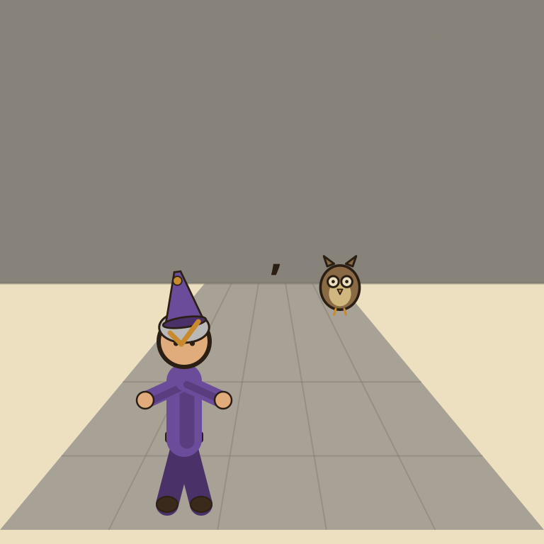
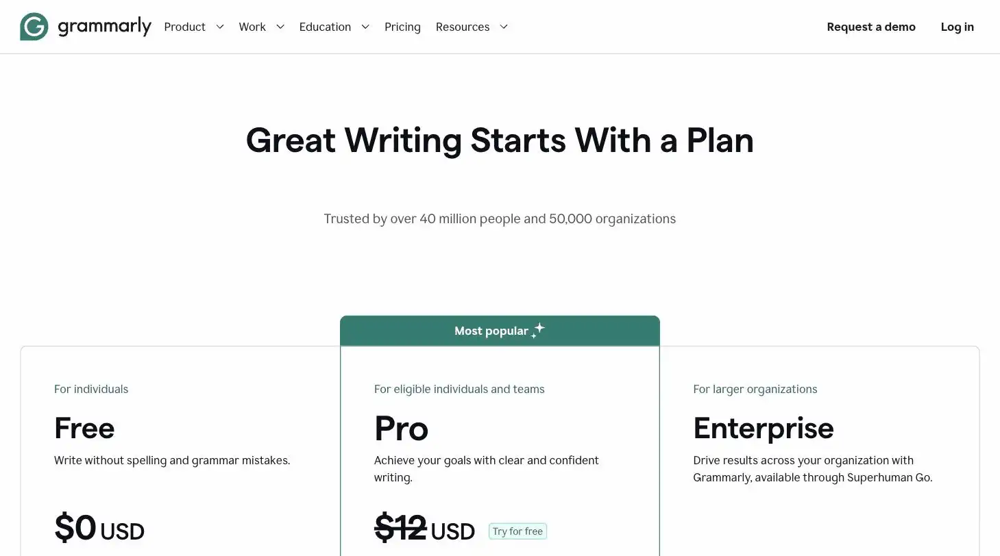
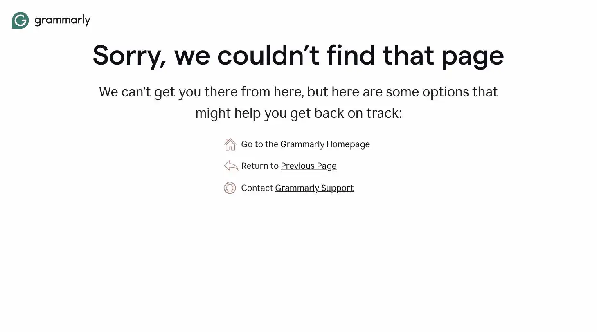

Grammarly

The owl had been silently judging the scribe's comma splices since apprenticeship. It was, annoyingly, always right.
Grammarly is an AI writing assistant that checks grammar, tone, and clarity everywhere you write, email, docs, and the browser, via a free browser extension and desktop app. Best for solopreneurs who write client emails, proposals, and marketing copy without an editor. Priced free (100 AI prompts/month) up to $12/month for Pro billed annually, the site's verdict is annual billing only, since monthly Pro costs nearly 3x as much for the same features.
Grammarly has been quietly judging your comma splices since college and, annoyingly, is usually right. Pay annually or it'll judge your budgeting too.
- Value for price8/10
- Capability7/10
- Ease of use9.5/10
- Trial safety8.5/10

Grammarly checks what you're already writing wherever you're writing it, which matters most for solopreneurs who don't have anyone else proofreading client-facing emails and proposals before they go out.

Grammarly's suggestions (shown above) surface directly inside whatever you're writing, email, docs, browser text fields, rather than requiring you to paste text into a separate AI chat window to get feedback.
Example from grammarly.com. Not independently tested by Solos Gems.Pricing breakdown
- Free: 100 AI prompts/month, core grammar and spelling checks
- Pro: $12/month billed annually ($144/year), or $30/month billed monthly; 2,000 AI prompts/month, full-sentence rewrites, plagiarism and AI-detection checks
- Business: folded into the Pro tier structure for teams up to 149 members, admin controls and brand tone consistency added
- Enterprise: custom pricing via the Superhuman Go suite, around $33/month per seat
The monthly-billing trap
Grammarly's Pro plan is priced very differently depending on how you pay: $12/month billed annually versus $30/month billed monthly, for the exact same feature set. That's a 2.5x markup for month-to-month flexibility most solopreneurs don't actually need. Unless you're testing Pro for a single project and plan to cancel within a month, annual billing is the only version of this plan worth buying.
Pros
- Works everywhere via browser extension, not just inside one app
- Free tier's 100 AI prompts/month is enough for light use before paying anything
- Pro's full-sentence rewrites catch tone issues plain spellcheck misses
Cons
- Monthly Pro pricing is nearly 3x the annual rate, easy to overpay without noticing
- Not built for drafting long-form content from scratch, it edits what you've already written
- Business/Enterprise tiers are folded into a separate Superhuman Go pricing structure that's confusing to parse
Common questions
Should I pay monthly or annually for Grammarly Pro?
Annually, without much debate. The monthly Pro rate is nearly three times the effective annual rate for identical features, it's easy to overpay just by not switching billing cycles.
Does Grammarly help with writing from scratch?
Not really, it's built to edit what you've already written rather than draft long-form content from nothing. Pair it with a writing tool for first drafts and use Grammarly for the polish pass.
Is Grammarly Business worth it for a solo operator?
Usually not. Business and Enterprise tiers are folded into a separate, more confusing pricing structure aimed at teams, a solo user's needs are covered by Free or Pro without touching the business tiers.